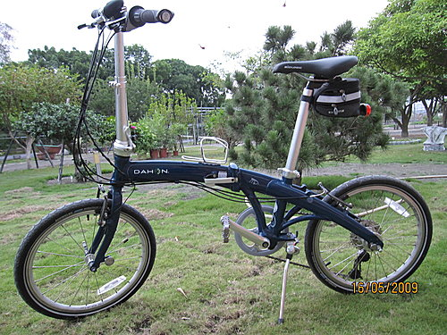
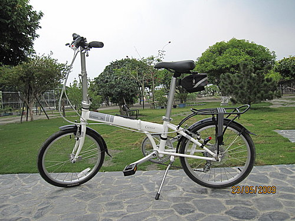
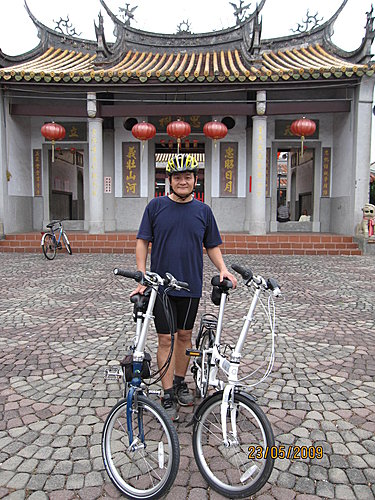
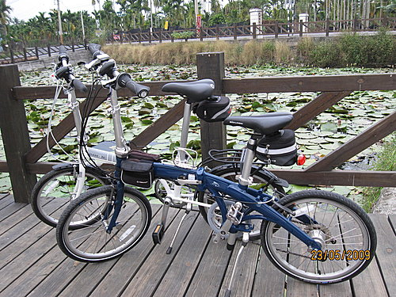

前些日子車友見面總是會問；「妳環島了嗎？」，最近車友見面則比較流行；「你買小摺了嗎？」，是的。我買了小摺，而且先後買了兩台，就藉此機會介紹一下我的小摺愛駒吧！
前些日子車友見面總是會問；「妳環島了嗎？」，最近車友見面則比較流行；「你買小摺了嗎？」，是的。我買了小摺，而且先後買了兩台，就藉此機會介紹一下我的小摺愛駒吧！
首先上場的是DAHON MU P24，這輛車有兩個最大特色：
一、外型亮麗，超迷人的海豚彎車架
二、24段變速，而前變是內3速變速，從外型看起來是8段變速，但前變3速隱藏在後花鼓裡，外行人難以窺探其中奧妙。
這輛車定價27000元，我以2萬元友情價購得，令人得意的是，迄今還未曾聽聞曾以此低價購得者！

接下來登場的是4天前所購得的DAHON SD7
買第二輛小摺的動機呢～小孩逐漸長大，也該找個時間和太太兩人相約騎車，共渡二人世界！
這輛車僅有七段變速，但面對一般道路應已綽綽有餘了，此車定價11000元，我以9350元的優惠價格購入此車，並加送前後燈（市價約800元）、SPECIALD水壺架、後車架、土除及加厚型攜車袋（市價合計2千元）

5/23與太太2人，各騎一台小摺，自屏東萬丹騎至竹田的客家文物館，全程約10餘公里
在竹田的忠義廟前留影，此廟的興建是紀念對抗朱一貴所犧牲的六堆義民

兩輛小摺在竹田「文筆亭」前的蓮花池合影

附註～因本文主要目的係在介紹我們的兩台小摺，擔心太太倩影入鏡，會讓本次主題失焦，故僅擇取較不顯眼的本人照片作地點介紹。
諸葛亮，只有一個！
一般人初接觸「古典音樂」時，皆會搞不清這個名詞與古典音樂中的「古典時期」或「古典樂派」有何關係。最簡單的說法為，「古典樂派」只是「古典音樂」的一部分，出現在十八世紀的奧、德，只有短短的五十年，其中以海頓、莫札特及後來的貝多芬為代表人物，興起背景與歐洲啟蒙運動、政教改革與理性主義有關。而更重要的是，沒有「古典樂派」的關鍵性承接，就沒有今天您聽到的「古典音樂」。 我們今天要為您介紹這「繼往開來」的重要樂派，和其最關鍵的人物─奧國作曲家海頓，並為他「歸位」！ 談到交響曲、室內樂，世人大多只會強調貝多芬和貝多芬以後的作曲家，其實這只是「事後諸葛」的盲點。大家可以用最簡單的方式去想一個問題，那就是音樂史上唯一有兩個「之父」(交響曲及弦樂四重奏)尊稱的作曲家是誰？而且為什麼在他(海頓)之後，即縮小位階，只敢稱「某某國之父」？同時貝多芬也只能稱之為「樂聖」？原因是，只有音樂的基礎打造者，如巴哈、海頓，才能得到最高頭銜，而他們的影響不是只存在古典音樂，現代的流行音樂創作，也都是在他們打下的音樂基礎上創新、變化。
許多人想到海頓，多半會形容他是「海頓爸爸」、「音樂平穩有秩序、優美但欠缺思想」，可是大家都忘了十八世紀前，人類思想仍不被允許浪漫。必須受制宗教及君主，所以需要「啟蒙」，也才會有英國哲學家洛克(John Locke, 1632-1704)主張「被統治者的權利」，和牛頓(Sir Isaac Newton, 1643-1727)「天體以太陽為中心」的科學革命。

十八世紀歐洲啟蒙運動後，人們終於學會問「為什麼？」圖為當時電力實驗，以現代人觀點來看，「科學革命並不科學」，而這就是「事後諸葛」！
所以「啟蒙運動」就是人類「思想改造」，改造後必然相對出現理性主義、崇尚秩序的古典樂派，然後繼續再相對出現強調思想變化的「唯心論、浪漫樂派」，因為沒有衝撞、對立，人類就不會反省，更不會前進！所以人類歷史是不會「跳接」的，音樂也一樣！
查拉圖斯特拉如是說: 粉羨慕呢。 感謝分享，紅豆泥。